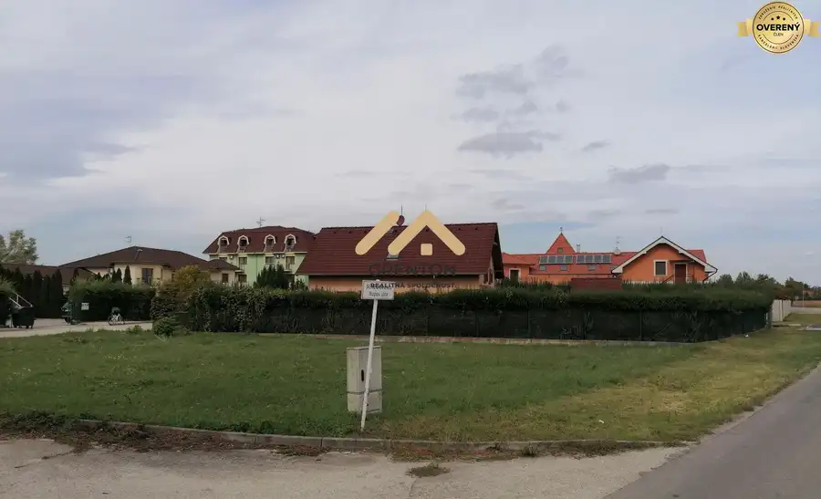
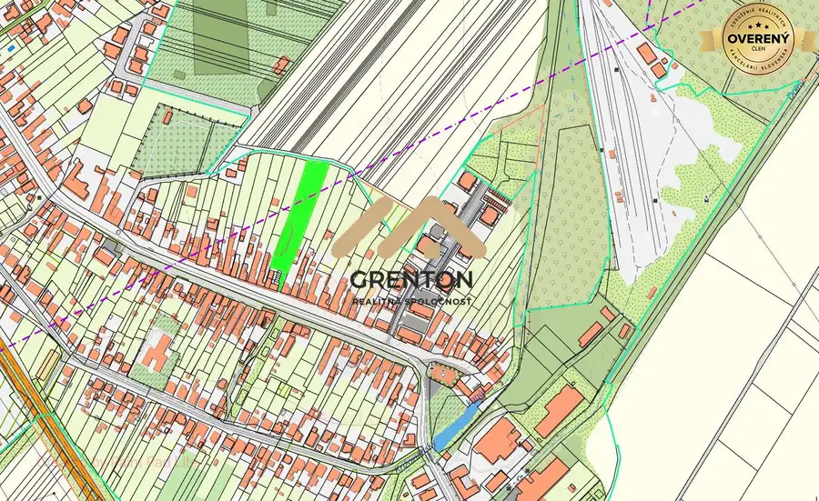
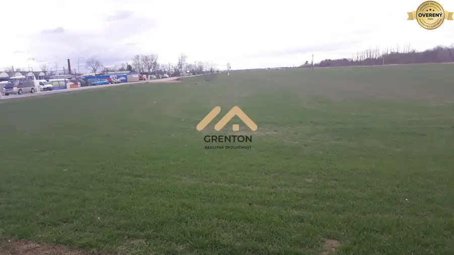

Prenájom · Nebytové priestory
Na prenájom hala v Rači 750 m2, ktorá sa dá rozdeliť na dve polovice
Rača, Bratislava
Cena dohodou
- Plocha750 m²
- Vlastníctvofiremné
O nehnuteľnosti
1 m2 za priestor = 6EUR / mes + energie podľa skutočnej spotreby + DPH
300 m2 za priestor = 1 800EUR / mes + energie podľa skutočnej spotreby + DPH
Voľnébývanie.sk V prípade záujmu volať Mgr. Lukáš Štefánek, .
Parametre
| Úžitková plocha | 750 m² |
|---|---|
| Vlastníctvo | firemné |
| Odvoz odpadu | áno |
| Voda | verejný vodovod |
| El. napätie | 230/400V |
| Plyn | áno |
| Kanalizácia | áno |
| Kúpeľňa | nie |
| Garáž | áno |
| Parkovanie | vonkajšie |
| Inžinierske siete | áno |
| Postavené z | Zmiešané |
| Zariadenie | nezariadený |
| Zateplený objekt | áno |
| Prístupová cesta | betónová cesta |
| Dátum zverejnenia | 9. 2. 2023 |
Kde to je
Ďalšie ponuky
Celá ponukaMohlo by Vás zaujímať

Pozemok10 60 500 €Na predaj pozemok pri kúpalisku vo Veľkom Mederi s projektom Veľký Meder 482 m² Voľnébývanie.sk ponúka na predaj pozemok pri termálnom kúpalisku s kompletným projektom apartmánového domu s bytom 100 m2 alebo nadštandartné…
Pozemok 375 000 €Na predaj stavebný pozemok 4 397 m2 vo Vlčkovciach s ÚPI pre domy Vlčkovce 4397 m² Pozemok = 4 214 m2 Prístupová cesta = 183 m2 Na pozemku sú všetky IS. Pozemok s prístupovou cestou je na mapke znázornený krikľavo zelenkavou farbou.…
Developerské projekty2 1 068 960 €Na predaj orná pôda v Podunajských Biskupiciach 13 362 m2 Podunajské Biskupice, Bratislava 13362 m² Rozloha = 13 362 m2 Šírka = 17 m, dĺžka = 786 m2 Prístup: asfaltová cesta 1 m2 = 80€/m2 13 362 m2 = 1 068 960EUR Voľnébývanie.sk V prípade záujmu…